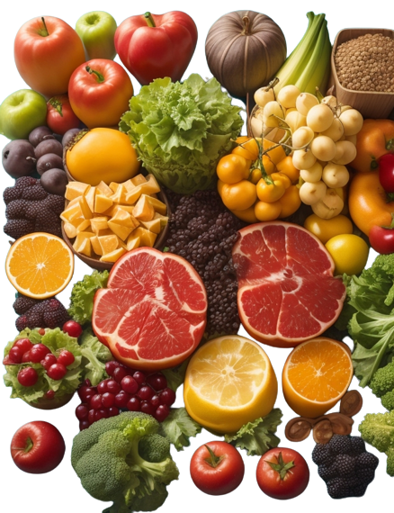
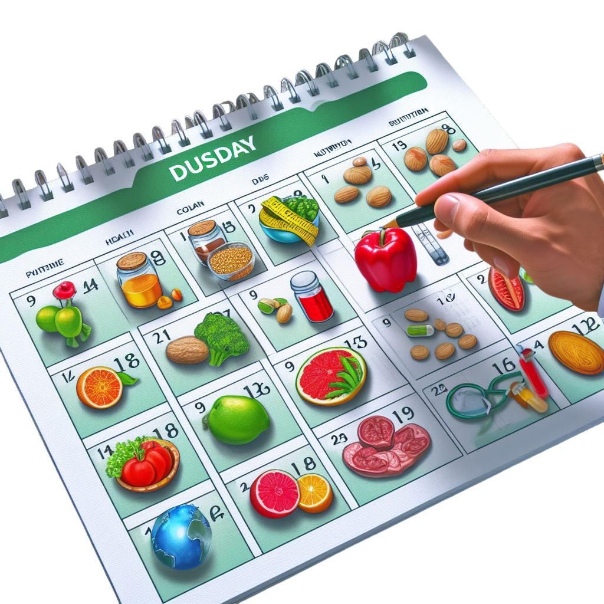

La Institución de Alimentación y Nutrición del Estado Trujillo (IANET) se encarga de garantizar la distribución equitativa y justa de alimentos a la población como, niños, niñas, adolescentes, mujeres embarazadas, y mayores de 60 años. Con la finalidad de mejorar la calidad de vida de la población vulnerable.
Ofrecemos servicios de consulta médica y nutricional de la más alta calidad a nuestros distinguidos usuarios y usuarias en nuestra sede principal ubicada en el municipio Valera, Edo. Trujillo. Nos comprometemos a garantizar una gestión nutricional eficiente y personalizada, diseñada para satisfacer las necesidades individuales de cada uno de nuestros clientes. No dudes en reservar tu cita en nuestro instituto para recibir la atención que necesites.

En el Instituto de Alimentación y Nutrición del Estado Trujillo, presentamos nuestro calendario de jornadas para actividades especiales, diseñado para ofrecer a nuestra comunidad una amplia gama de eventos enfocados en promover la salud y el bienestar a través de la alimentación y la nutrición. Mantente al tanto de nuestras próximas jornadas y forma parte de nuestras actividades.
Visita nuestro perfil de Instagram y mira nuestros últimos posts para enterarte de más información
Mandanos un correo eléctronico para contactarte con nosotros
Entra a esta sección para ver toda la información de contacto de la institución
.svg)
Accede al apartado de consultas médicas
En el Instituto de Alimentación y Nutrición del Estado Trujillo, ponemos a tu disposición nuestro servicio de consultas médicas, donde podrás recibir atención especializada y personalizada para abordar tus necesidades de salud y nutrición. ¡No dudes en agendar tu consulta con nosotros!
Accede al calendario de jornadas
Descubre las próximas jornadas en el Instituto de Alimentación y Nutrición del Estado Trujillo y únete a nosotros para aprender, compartir y crecer juntos en el camino hacia una vida más saludable.
¿Quieres saber más sobre nosotros?
¡Descubre la historia detrás del Instituto de Alimentación y Nutrición del Estado Trujillo! Visita nuestra sección "Sobre Nosotros" para conocer más sobre nuestra misión, visión y el impacto que estamos generando en la comunidad.